Video 1 · Policy learning · 1:48
Hardware Demonstrations
Hardware transfer of trotting, pacing, and gait-free policies, including trotting under external pushes, over debris, and on slippery ground.
Affiliations to be added
TL;DR — The exact contact gradient only describes changes within the current contact mode. We relax the full frictional contact law along its central path, only in the backward pass: the simulation stays hard-contact, and the gradient stays smooth across separation, clamping, and sliding.
This paper proposes a smooth analytic gradient for frictional contact and applies it to policy learning and contact-implicit trajectory optimization for legged locomotion. The exact contact sensitivity is available in closed form but describes changes within the current contact mode, providing no first-order information toward neighboring contact modes. The proposed gradient replaces this sensitivity only in the backward pass, leaving the hard-contact forward solve unchanged and the realized rollout feasible. A central-path relaxation of the de Saxcé-corrected second-order-cone complementarity problem for Coulomb friction smooths the conditions defining the separating, clamping, and sliding modes. The relaxed sensitivity is evaluated at a point on the central path obtained by a Newton iteration initialized from the hard-contact solution. The sensitivity remains continuous through contact-mode transitions and converges to the exact sensitivity as the relaxation vanishes. Using 100,000 samples and less than 2 min of training on a desktop PC, policy learning with the proposed gradient produces a policy that transfers to hardware without fine-tuning. On hardware, the robot under a trotting policy withstands pushes and traverses debris and slippery ground. In trajectory optimization, the proposed gradient reaches contact-rich solutions missed by exact and Signorini-relaxed gradients.
Hardware transfer of trotting, pacing, and gait-free policies, including trotting under external pushes, over debris, and on slippery ground.
BPTT with the proposed gradient against PPO on the trotting command-tracking task.
Three backward contact gradients in contact-implicit MPC under unmodeled external pulls in simulation.
The three gradients on translation, yaw-rotation, and pitch-rotation tasks without prescribed contact modes or foothold locations.
The forward simulation stays a hard-contact solve; only the backward pass changes. With the de Saxcé correction, the Signorini condition, the Coulomb friction cone, and maximum dissipation form one second-order-cone complementarity condition, λ̃ ∘ σ̃ = 0. We relax it along its central path, λ̃ ∘ σ̃ = ρe, and differentiate at the relaxed point, which a Newton iteration finds from the hard-contact solution.
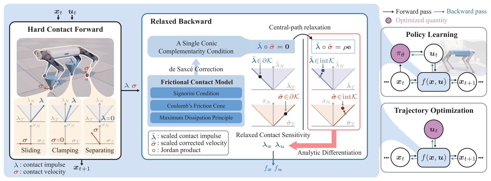
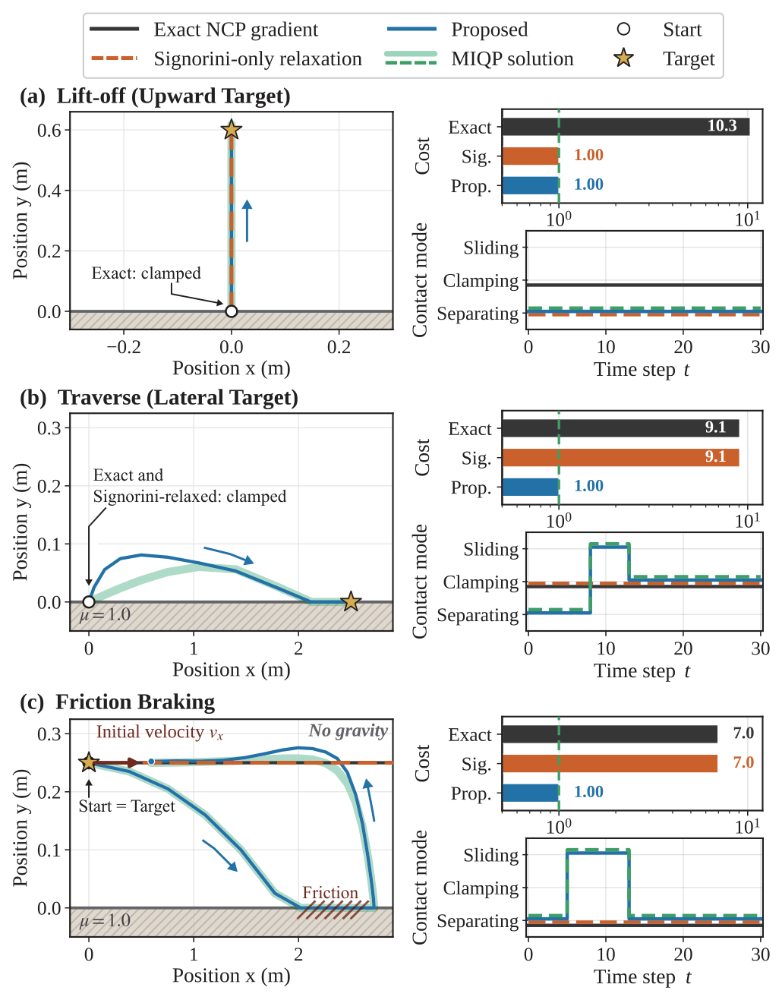
Even for a single point mass, the backward gradient decides which contact modes the optimizer can reach. With the same hard-contact forward dynamics, only the proposed full-cone relaxation finds the optimal contact-mode sequence in all three tasks.
On the central path, the relaxed impulse and contact velocity lie strictly inside their cones, so a clamped contact receives first-order directions toward both separation and sliding.
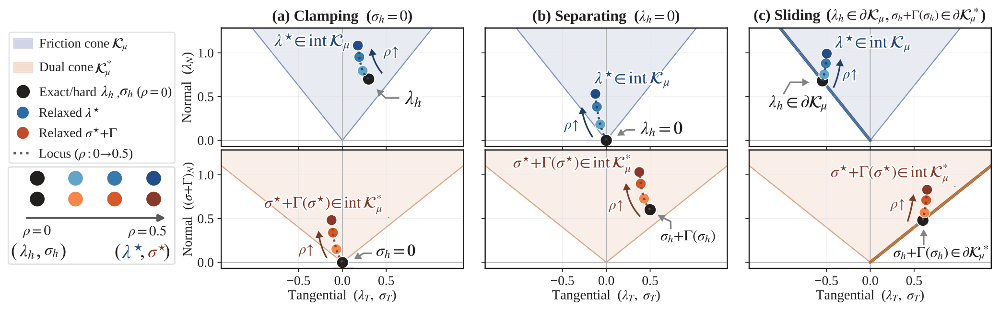
The exact sensitivity jumps at mode boundaries. Randomized smoothing needs 128 perturbed contact solves per point to smooth it; the proposed sensitivity is smooth from a single Newton solve.
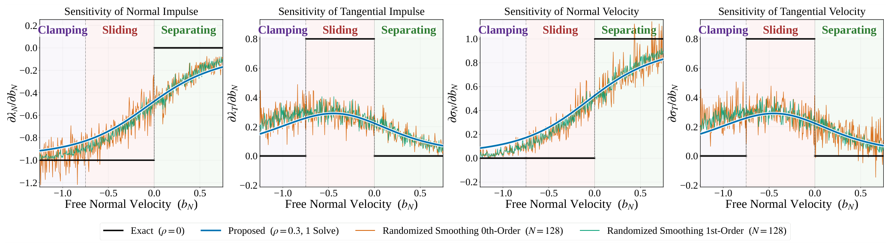
Velocity-tracking policies are trained by differentiating 0.5-s rollouts (20 control steps) through the simulator. Only the backward contact gradient changes between runs.
Only the proposed gradient learns both gait-free tasks, at nominal and at low friction. For trot and pace, it attains the lowest median evaluation cost.
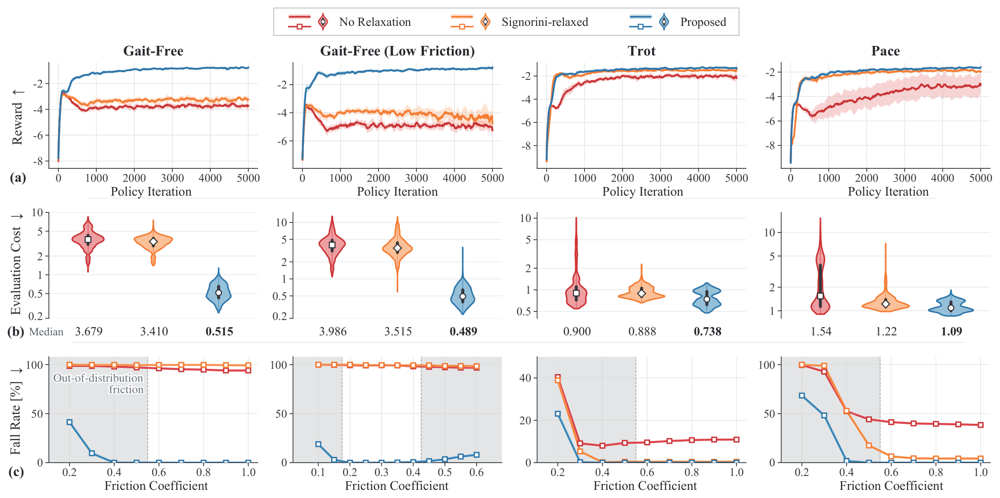
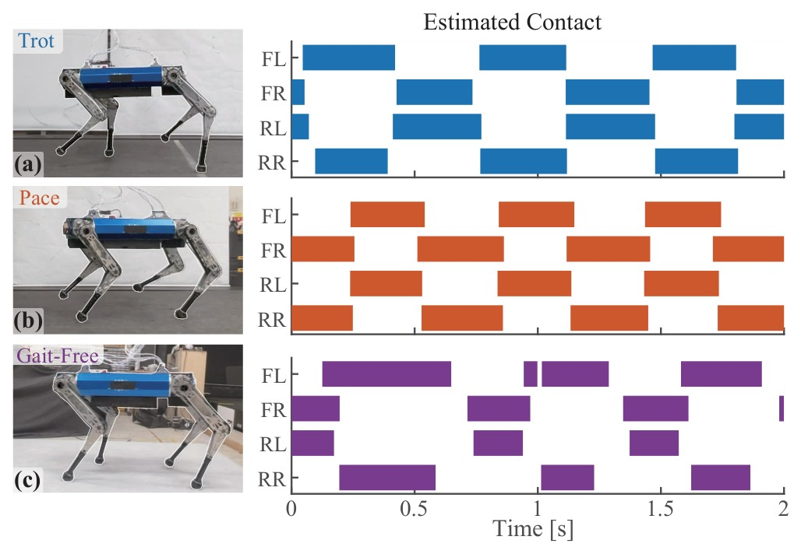
Policies trained with a single simulation environment transfer to the 45-kg quadruped without fine-tuning: trot and pace after 100,000 samples and 108 s of training, the low-friction gait-free policy after 160,000 samples and 172 s.
Watch Video 1The trotting policy traverses scattered debris, recovers from external pushes, and keeps walking on a boric-acid-coated surface with μ ≈ 0.25, below its training range.
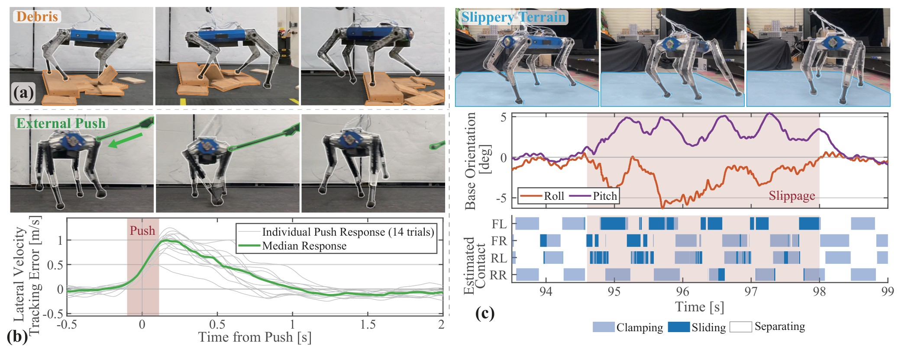
BPTT with the proposed gradient learns the trot with one environment, whereas PPO first learns it with 128 environments: about 105 versus 107 samples. Watch Video 2
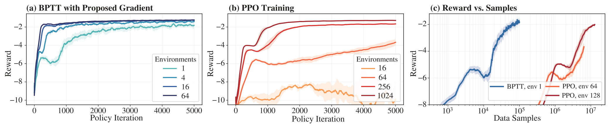
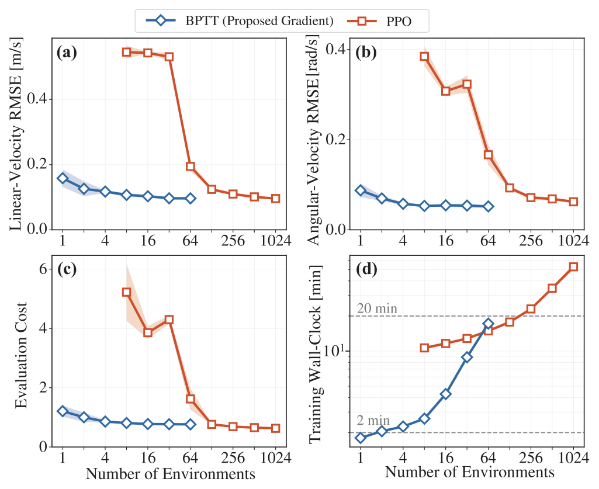
In these smallest settings, BPTT trains in 1.8 min and PPO in 17.7 min, with comparable tracking accuracy and evaluation cost.
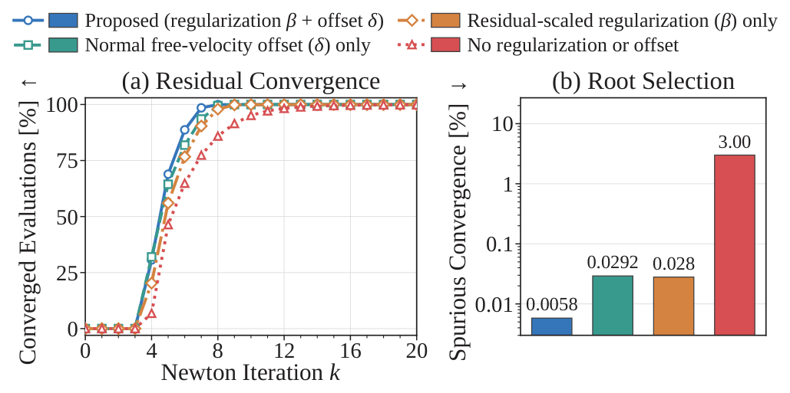
The regularized Newton iteration meets the residual tolerance (ε = 10−10) within eight iterations in 99.95% of backward contact evaluations.
Shooting-based CITO (DDP) and contact-implicit MPC use the same transition Jacobians. With the proposed gradient, the optimizer can release a clamped contact, by lifting or sliding the foot, and reposition the feet.
The proposed gradient attains the lowest costs across translation, yaw, and pitch references. With the exact gradient, the feet stay clamped for translations up to 0.7 m and yaw up to 1.0 rad, so the base leans or twists over fixed feet. Watch Video 4
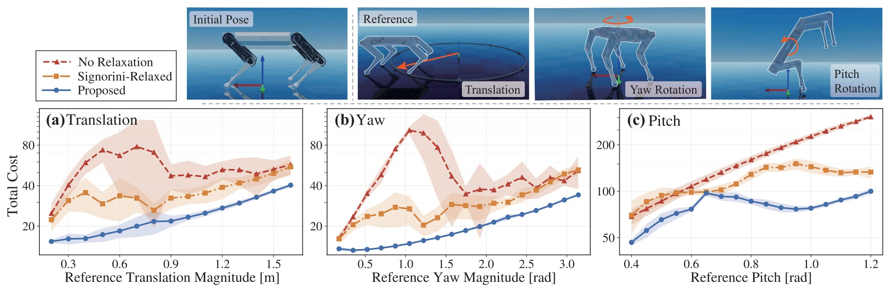
From a shared initialization, the proposed gradient reduces the cost from 116 to 39 in 25 DDP iterations: the loaded rear-right foot slides about 0.4 m and reclamps at a new location. With the exact and Signorini-relaxed gradients, the foot stays clamped and the cost only falls to 98 and 95.
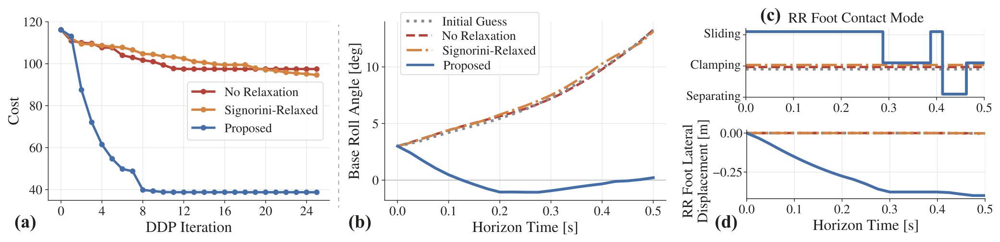
In contact-implicit MPC at 40 Hz, the proposed gradient withstands the largest unmodeled 1-s pulls in every direction: 272 N on average, 3.4 times the exact gradient (81 N) and 2.5 times the Signorini-relaxed gradient (107 N). Watch Video 3
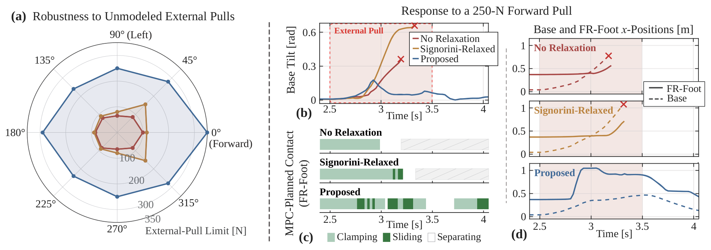
@article{anonymous2026differentiable,
title = {Differentiable Contact Dynamics for Legged Locomotion:
Policy Learning and Contact-Implicit Trajectory Optimization},
author = {Anonymous Author(s)},
journal = {arXiv preprint},
year = {2026}
}